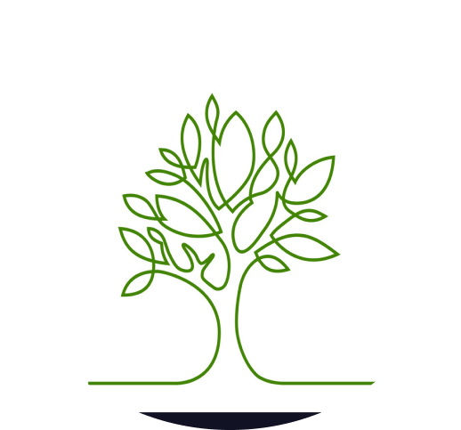
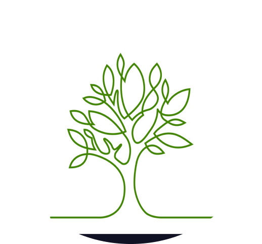

Our Mission
To become a centre of excellence in the field of environment related subjects
& Help to find techno-commercially viable solutions to improve life.
Our Vision
To provide platform for Innovations in the field of environment keeping in mind the Goals of Swachh Bharat Mission. To Incubate enterprising persons having fresh ideas in the field by hand holding by providing support from Ideation to Concept of Proof stages. Also, to associate with Industries to achieve Sustainable Development Goals (SDGs) by taking up their projects, and conduct research in applied fields relevant to the time.